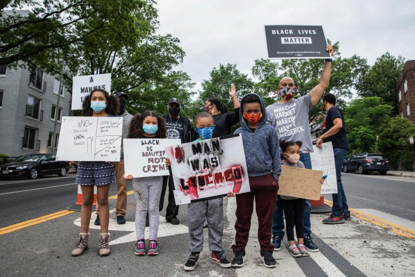
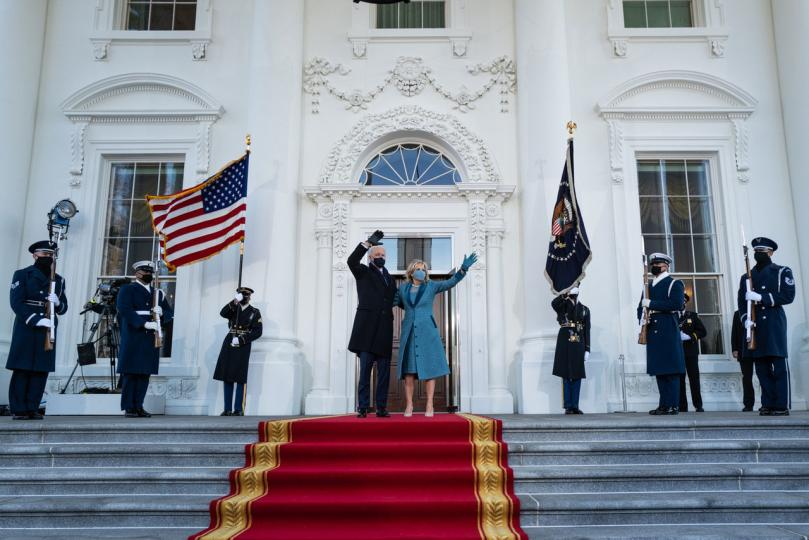

Connection and Purpose
The Photography of Cheriss May
May is a White House pool photographer, photographing political subjects and scenes taking place in Washington D.C, including coverage on the January 6, 2021 Capitol riots. Her work covers major news events, captured live to develop enriching stories and conversations engaging to the audience. She was brought on the B&H Photography Podcast to discuss her recent editted assignments, her personal work, and the technique and equipment used to create her stories.
Her interview on the B&H podcast can be found here


